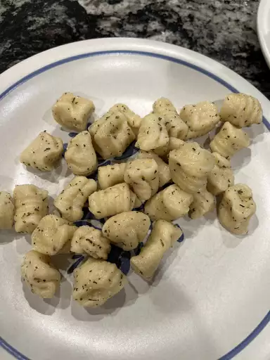

Gnocchi

Gnocchi is simple to make with just three ingredients: mashed potato, flour, and egg. This recipe is one my family
has used for generations.
Ingredients:
- 2 potatoes, peeled
- 2 cups all-purpose flour
- 1 egg
Steps:
- Bring a large pot of salted water to a boil
- Combine 1 cup mashed potato, flour, and egg in a large bowl. Knead until dough forms a ball
- Bring a large pot of lightly salted water to a boil.